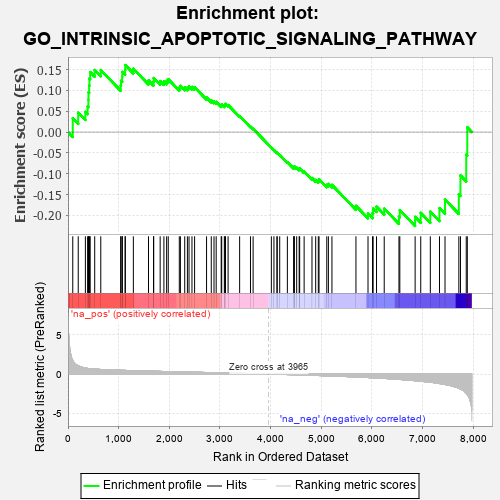
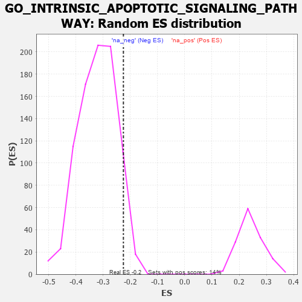

| | | Dataset | 7d |
| Phenotype | NoPhenotypeAvailable |
| Upregulated in class | na_neg |
| GeneSet | GO_INTRINSIC_APOPTOTIC_SIGNALING_PATHWAY |
| Enrichment Score (ES) | -0.2255532 |
| Normalized Enrichment Score (NES) | -0.7037585 |
| Nominal p-value | 0.92906976 |
| FDR q-value | 1.0 |
| FWER p-Value | 1.0 |
Table: GSEA Results Summary

Fig 1: Enrichment plot: GO_INTRINSIC_APOPTOTIC_SIGNALING_PATHWAY
Profile of the Running ES Score & Positions of GeneSet Members on the Rank Ordered List
| PROBE | GENE SYMBOL | GENE_TITLE | RANK IN GENE LIST | RANK METRIC SCORE | RUNNING ES | CORE ENRICHMENT | | 1 | UBE2K | | | 94 | 1.739 | 0.0331 | No |
| 2 | BCL3 | | | 202 | 1.047 | 0.0466 | No |
| 3 | DAPK2 | | | 343 | 0.754 | 0.0484 | No |
| 4 | BAX | | | 387 | 0.711 | 0.0614 | No |
| 5 | RRP8 | | | 403 | 0.699 | 0.0775 | No |
| 6 | NBN | | | 405 | 0.696 | 0.0954 | No |
| 7 | RAD9A | | | 418 | 0.681 | 0.1115 | No |
| 8 | MLH1 | | | 423 | 0.679 | 0.1286 | No |
| 9 | RRN3 | | | 438 | 0.667 | 0.1441 | No |
| 10 | HTRA2 | | | 527 | 0.621 | 0.1490 | No |
| 11 | NOC2L | | | 647 | 0.578 | 0.1489 | No |
| 12 | AKT1 | | | 1040 | 0.476 | 0.1115 | No |
| 13 | TAF9 | | | 1046 | 0.475 | 0.1232 | No |
| 14 | XPA | | | 1070 | 0.469 | 0.1324 | No |
| 15 | AIFM1 | | | 1072 | 0.469 | 0.1444 | No |
| 16 | SRC | | | 1128 | 0.459 | 0.1493 | No |
| 17 | NCK2 | | | 1131 | 0.458 | 0.1609 | No |
| 18 | PARL | | | 1290 | 0.432 | 0.1520 | No |
| 19 | ERP29 | | | 1589 | 0.376 | 0.1240 | No |
| 20 | WWOX | | | 1688 | 0.359 | 0.1208 | No |
| 21 | HYOU1 | | | 1692 | 0.358 | 0.1297 | No |
| 22 | MSH2 | | | 1819 | 0.334 | 0.1224 | No |
| 23 | CUL3 | | | 1893 | 0.321 | 0.1214 | No |
| 24 | CUL5 | | | 1947 | 0.314 | 0.1228 | No |
| 25 | BRSK2 | | | 1979 | 0.308 | 0.1269 | No |
| 26 | ATAD5 | | | 2197 | 0.277 | 0.1065 | No |
| 27 | TRAP1 | | | 2219 | 0.274 | 0.1110 | No |
| 28 | GSKIP | | | 2304 | 0.259 | 0.1070 | No |
| 29 | MIF | | | 2357 | 0.252 | 0.1070 | No |
| 30 | HIPK2 | | | 2389 | 0.247 | 0.1094 | No |
| 31 | KDM1A | | | 2447 | 0.237 | 0.1083 | No |
| 32 | MELK | | | 2499 | 0.227 | 0.1077 | No |
| 33 | CUL1 | | | 2735 | 0.193 | 0.0829 | No |
| 34 | BECN1 | | | 2828 | 0.179 | 0.0759 | No |
| 35 | CUL2 | | | 2882 | 0.169 | 0.0736 | No |
| 36 | ERO1A | | | 2925 | 0.162 | 0.0724 | No |
| 37 | BRCA2 | | | 3024 | 0.146 | 0.0638 | No |
| 38 | PIAS4 | | | 3034 | 0.145 | 0.0664 | No |
| 39 | HDAC1 | | | 3086 | 0.138 | 0.0635 | No |
| 40 | CUL4A | | | 3097 | 0.137 | 0.0658 | No |
| 41 | GPX1 | | | 3109 | 0.135 | 0.0679 | No |
| 42 | ERN2 | | | 3160 | 0.129 | 0.0649 | No |
| 43 | DDX3X | | | 3388 | 0.091 | 0.0385 | No |
| 44 | STK25 | | | 3602 | 0.059 | 0.0130 | No |
| 45 | FIS1 | | | 3654 | 0.051 | 0.0079 | No |
| 46 | PARP1 | | | 4014 | -0.010 | -0.0374 | No |
| 47 | SFRP2 | | | 4065 | -0.018 | -0.0432 | No |
| 48 | ABL1 | | | 4125 | -0.027 | -0.0500 | No |
| 49 | MSH6 | | | 4129 | -0.028 | -0.0497 | No |
| 50 | PDX1 | | | 4179 | -0.038 | -0.0549 | No |
| 51 | OPA1 | | | 4330 | -0.065 | -0.0722 | No |
| 52 | SYVN1 | | | 4454 | -0.085 | -0.0856 | No |
| 53 | ERCC6 | | | 4464 | -0.087 | -0.0845 | No |
| 54 | LRRK2 | | | 4467 | -0.087 | -0.0825 | No |
| 55 | SNW1 | | | 4514 | -0.096 | -0.0858 | No |
| 56 | BAG6 | | | 4563 | -0.108 | -0.0891 | No |
| 57 | SGPP1 | | | 4573 | -0.112 | -0.0873 | No |
| 58 | ITPR1 | | | 4661 | -0.130 | -0.0950 | No |
| 59 | FBXW7 | | | 4816 | -0.161 | -0.1103 | No |
| 60 | CLU | | | 4889 | -0.174 | -0.1150 | No |
| 61 | EP300 | | | 4941 | -0.186 | -0.1166 | No |
| 62 | PRKDC | | | 4955 | -0.189 | -0.1133 | No |
| 63 | MMP9 | | | 5108 | -0.227 | -0.1267 | No |
| 64 | FLCN | | | 5140 | -0.235 | -0.1246 | No |
| 65 | ATM | | | 5210 | -0.249 | -0.1269 | No |
| 66 | CDIP1 | | | 5684 | -0.370 | -0.1772 | No |
| 67 | STK11 | | | 5922 | -0.443 | -0.1958 | No |
| 68 | XBP1 | | | 6011 | -0.475 | -0.1947 | No |
| 69 | JMY | | | 6023 | -0.479 | -0.1837 | No |
| 70 | UBB | | | 6090 | -0.503 | -0.1790 | No |
| 71 | VDAC2 | | | 6242 | -0.553 | -0.1839 | No |
| 72 | DYRK2 | | | 6533 | -0.677 | -0.2031 | No |
| 73 | STK24 | | | 6550 | -0.684 | -0.1874 | No |
| 74 | AEN | | | 6852 | -0.842 | -0.2038 | Yes |
| 75 | DNM1L | | | 6963 | -0.913 | -0.1941 | Yes |
| 76 | DDX5 | | | 7152 | -1.037 | -0.1910 | Yes |
| 77 | CYLD | | | 7333 | -1.206 | -0.1826 | Yes |
| 78 | CASP2 | | | 7442 | -1.322 | -0.1621 | Yes |
| 79 | BOK | | | 7715 | -1.817 | -0.1496 | Yes |
| 80 | CASP3 | | | 7747 | -1.902 | -0.1043 | Yes |
| 81 | TRAF2 | | | 7861 | -2.481 | -0.0543 | Yes |
| 82 | CHAC1 | | | 7882 | -2.633 | 0.0113 | Yes |
Table: GSEA details [plain text format]

Fig 2: GO_INTRINSIC_APOPTOTIC_SIGNALING_PATHWAY: Random ES distribution
Gene set null distribution of ES for GO_INTRINSIC_APOPTOTIC_SIGNALING_PATHWAY